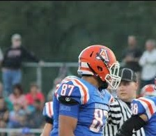
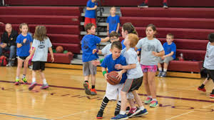

Experiences That Affected My Life
All Conference Recognition
Over my many years of playing sports, I have been lucky enough to receive some awards to show that my hard work has truthfully paid off. I was nominated my Junior year for making All-Conference in both football and basketball. With being halfway through my senior year in aspects to sports, I have already been selected as to make the all-conference team in football. The basketball season has yet to start but I hope to have continued success in basketball as well. Sports is more than just a fun time. You have a gruelling schedule throughout the week. This constant grind of sports has formed me into the person I am today. My future plans are to play football in college. Continuing sports will help me pay for my education along with being able to play the sport I love.
Help Run A Local Youth Basketball Tournament
Over the past five years, I have helped run a youth basketball tournament that takes place at Armstrong High School, and took place at Ford City High School before its closing. From this tournament, I have spent an insane amount of hours running the clock during mostly every basketball game. I also made the schedule for the tournament for the past two years, and dealt with any problems going on the day of the tournament when the head person was missing. This artifact helped me learn how to give back to my community service and working to help kids that will hopefully end up doing the same thing when they are the older kids of the community. Being around kids like that helps you to understand what you want to do with your life, in my opinion. I would not be surprised if at one point in time I am a coach for either football or basketball helping kids.
Leader Times Basketball Player of the Year 2016-2017

Earning this award was from Basketball season where I had a successful year and the team reached the play-offs while I averaged a double-double. Receiving this award was very humbling as I’ve spent most of my life playing sports and working hard in the gym/ weight room to make myself a better person on and off the floor. I have been playing basketball for many years and throughout that time I have made a ton of lifelong friends and memories.